Bringing clarity to complex data flows
Enterprise data processing made accessible through flexible, visual workflows.
Zero-to-oneVisual programmingEvolution
- Solved the initial zero-to-one problem with a code editor, then progressively introduced visual controls
- Co-created a stages-and-operations model with engineering, making complex pipelines manageable and accelerating development
- Used client workshops, training sessions and hands-on implementation to identify and refine difficult workflows
- Pipelines became the platform’s marquee product and primary growth driver, processing 3.4bn rows of data per year
- 17k
- Runs per year
- 3.4bn
- Rows processed annually
- 34+
- Different data domains
- 100%
- Sales attributed to pipelines
I led the design and evolution of Quantemplate Pipelines, taking it from a code editor to a visual environment for building and managing data transformations.
The initial challenge was breadth: clients needed every transformation in their workflow to be possible before the product could be useful. We shipped that capability through code, then progressively made it accessible through stages, operations and dedicated interfaces.
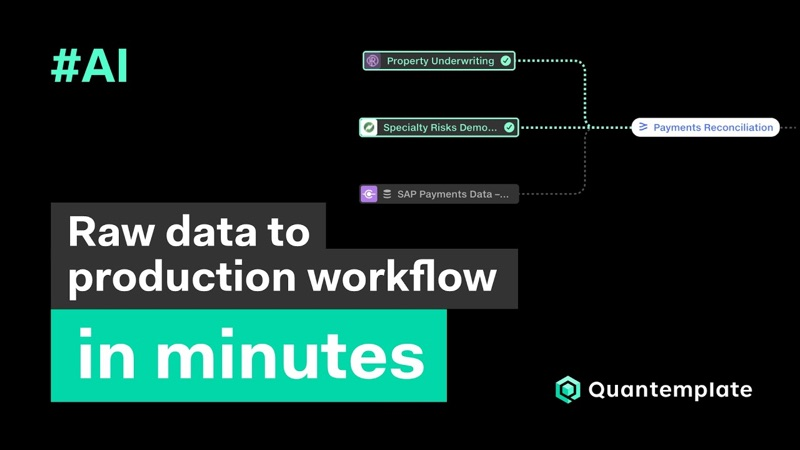
From raw data to production workflow in minutes with AI pipelines Watch on YouTubeFerraris on country roads
Quantemplate’s first product offering was a high-performance, drag-and-drop analytics suite. In 2013, there was nothing else like it. We had gone to insurers with these tools, but they were struggling to get their data into a form that could be analysed. One client put it memorably:
Quantemplate is a Ferrari, but our data is on country roads. COO, major European insurance company
So we set about building a race track, taking everything we had learnt from building the analytics tools and applying it to data integration.
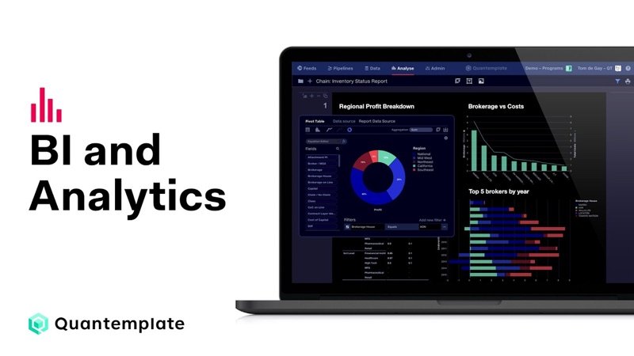
Business Intelligence and Analytics demo Watch on YouTubeWhere Quantemplate’s visual language came from →
The zero-to-one challenge was that a pipeline needed to support every transformation required to complete the job.
A missing operation could leave the whole workflow unusable. We needed to get to that breadth of capability quickly, then make it easier to work with.
Ship the capability, then refine the experience
We released a code editor with views for inputs, transformation code and outputs. This gave us the flexibility to support clients’ requirements and learn what was required while we developed the visual experience.
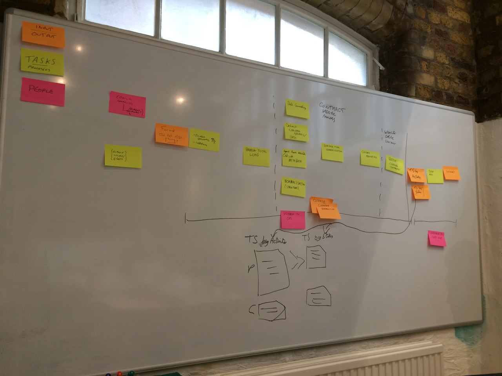
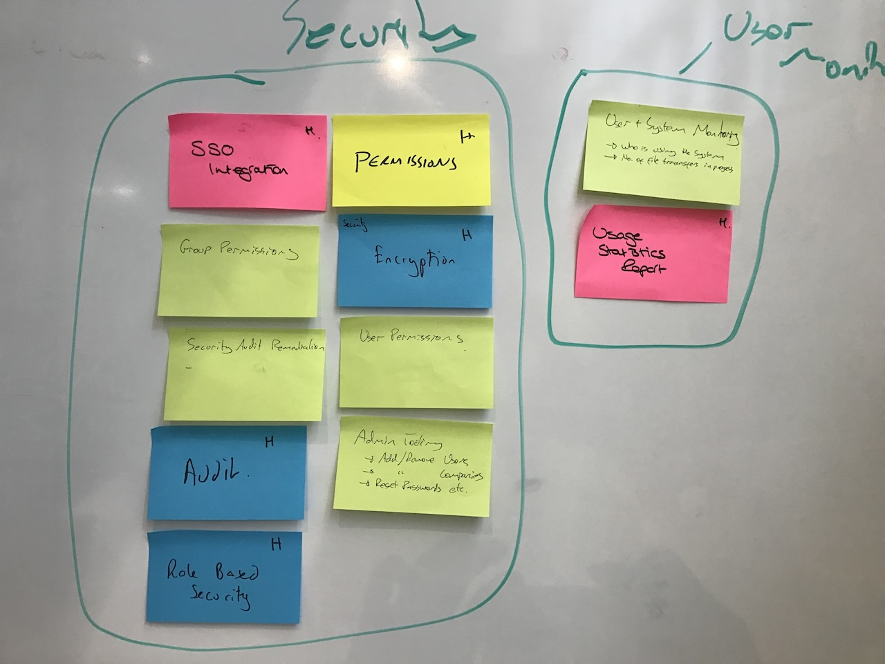
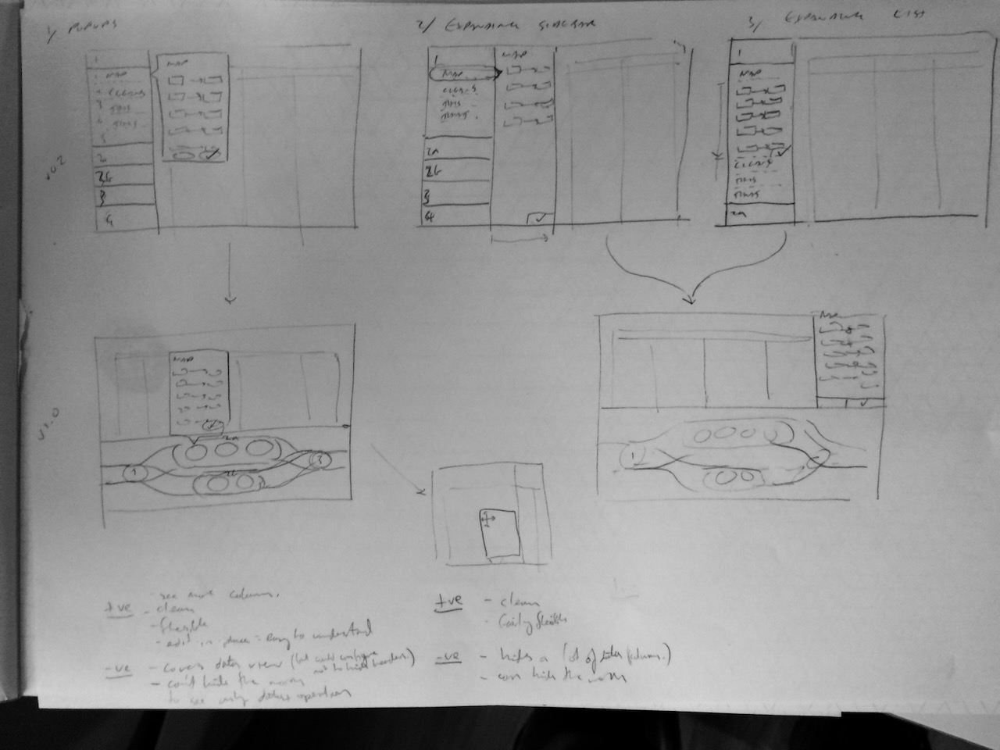
We then broke the code into understandable portions and began building dedicated interfaces for each of them. Workshops with clients helped us map out their data flows and stack-rank the operations to tackle first.
This approach meant that each operation could have an interface tailored to its particular task.
This was progressive disclosure, a principle I had learnt through wayfinding: help people orient themselves, then reveal the detail they need at the point they need it.
Stay close to real implementations
I made sure I was in every client meeting or training session. I also used the product extensively, becoming deeply involved in production implementations and building many pipelines myself.
This helped me understand where the design became difficult under the complexity of real data. Following data through a pipeline was one recurring problem, confirmed by conversations with other users. Later, the need to understand connections between multiple pipelines emerged in the same way.
Give pipelines a simple hierarchy
Our first visual model broke the code into steps called stages. We soon realised that pipelines would become enormous if every operation occupied its own stage.
Working with engineering, we introduced operations within stages. Stages represented the broader structure of the data flow (joining, combining or transforming inputs) while operations contained the detailed work.
This collapsed the pipeline into a manageable sequence. Users could see its overall structure, then open a stage to work on individual operations.
The model also made development practical. It allowed us to build the web application rapidly without getting caught up in complicated flowchart engineering, for which suitable web-based libraries were not available at the time.
Trace the changes
The engineering team built a new technology called Trace to preview the current state of the data and validate configuration as it flows through the pipeline. I designed the experience for this, indicating when a trace was running, and showing error states when an exception was found.
Later, when we started chaining pipelines together and introduced automated runs, I realised this created the potential for infinite loops.
This was a systemic risk. I advocated for the engineering team to develop loop detection and designed a UI for it.
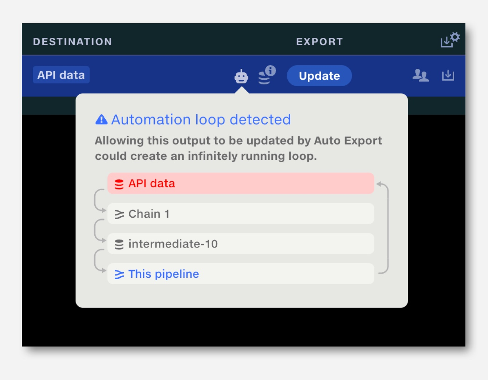
Continuous evolution
We progressively replaced transformation code with dedicated operation interfaces, prioritised through client workshops. Training sessions and hands-on implementation revealed where further refinement was needed. More recent additions include AI suggestions for join points, next-generation column-header mapping and one-click validations.
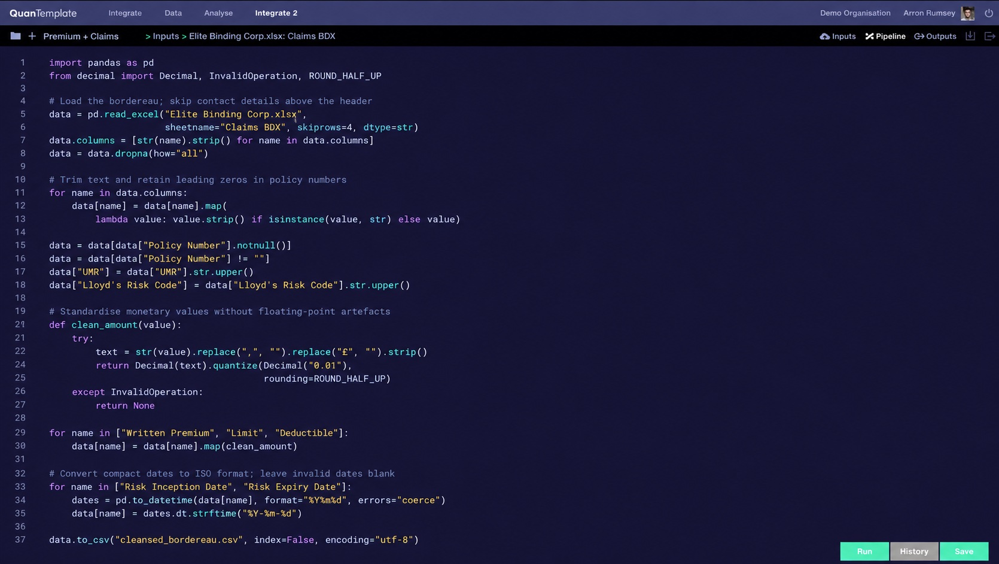
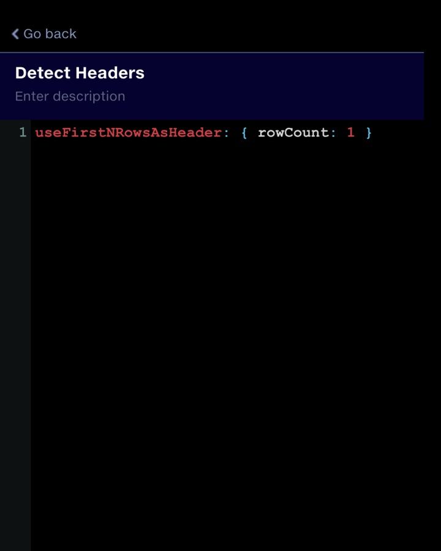
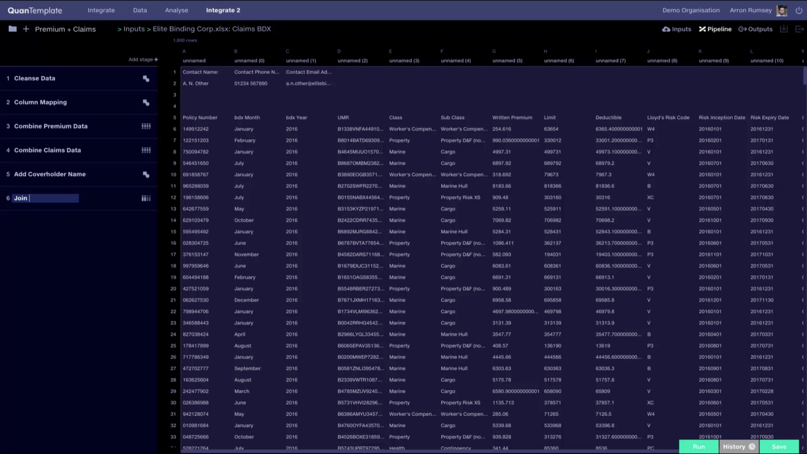
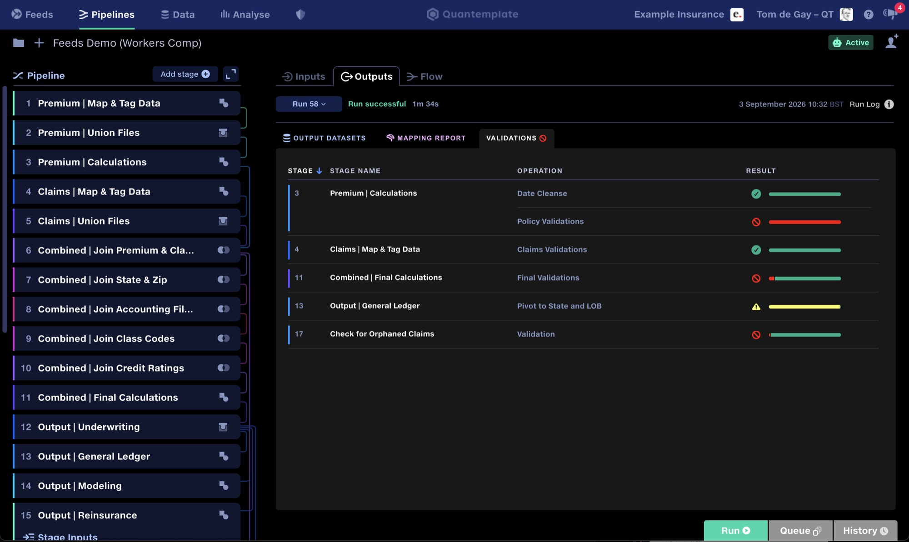
Bring inputs and outputs into one view
The pipeline’s right-hand area was originally intended for live data preview, but this proved technically challenging. Based on user feedback, I repurposed it to bring inputs and outputs together from their three separate tabs, resolving a navigation problem inherited from the original code editor.
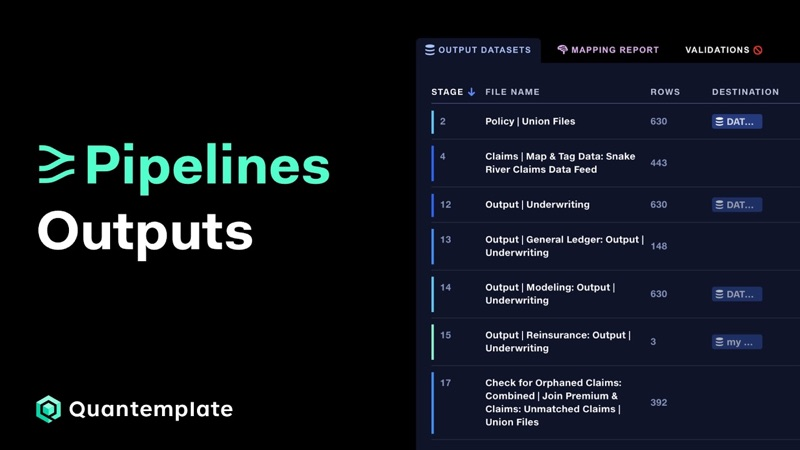
Pipelines: Outputs Watch on YouTubeShow the lineage
Another pain point we identified was keeping track of data lineage through pipelines. I proposed connecting lines between stages to help users follow data through a pipeline. Initially, I envisioned user-defined colour groups to denote functions, but the feedback we got was that these would add configuration overhead. Instead, we automatically cycled colours through a spectrum to distinguish connections.
Follow the connections between pipelines
As clients chained pipelines together, we found ourselves explaining the connections through Miro flowcharts. This was a desire line: a view we repeatedly created outside the product.
In 2026, we built a flowchart view into Quantemplate, giving users an overview across pipelines alongside the detailed stage editor.
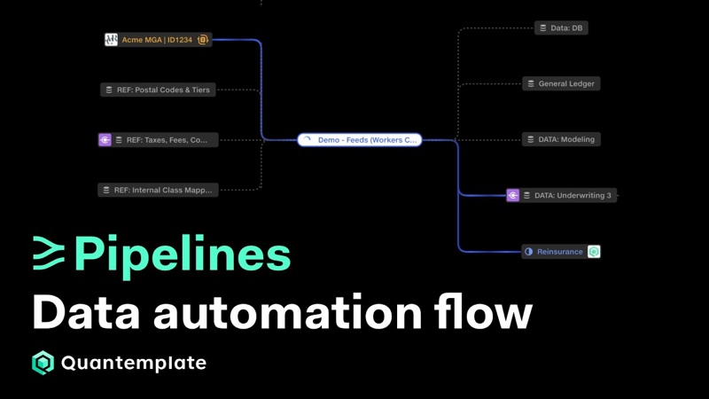
See your data automation in real time with Quantemplate Flow Watch on YouTubeMake activity visible
Pipelines glow as they run, along with their corresponding connecting lines in the flowchart. This makes execution visible in the context of the wider workflow. We recorded an uptick in engagement during demos and training sessions as the data flow through a pipeline became tangible.
From transformation code to a visual workflow
Pipelines evolved from a code editor into a fully-featured visual environment for building, running and tracing complex data transformations.
The stages-and-operations model gave us a structure that could grow with clients’ requirements. Dedicated operation interfaces made individual tasks understandable, while consolidated inputs and outputs, connecting lines and the flowchart view helped users navigate the larger process.
The work began with getting the full transformation capability into users’ hands. Sustained refinement then came from observing how clients used it, building pipelines ourselves and following the workarounds that showed us what the product needed next.
Pipelines have driven the growth of the business and are now responsible for 100% of engagements and sales, processing 3.4bn rows per year with 17k pipeline runs in client production environments.
 Column mapping
Mapping inconsistent schemas at scale
Translate inconsistent data sources to a common target format, fully automated and enhanced by AI suggestions.
Interaction designHuman-in-the-loop
Column mapping
Mapping inconsistent schemas at scale
Translate inconsistent data sources to a common target format, fully automated and enhanced by AI suggestions.
Interaction designHuman-in-the-loop